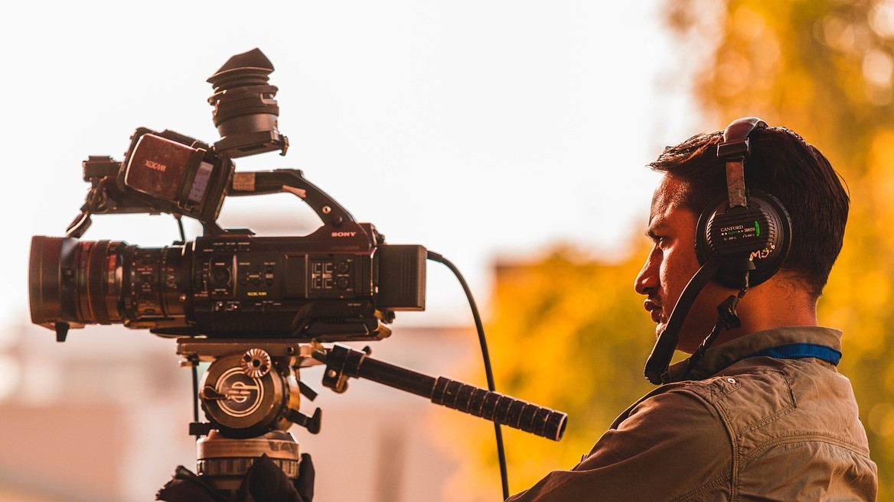
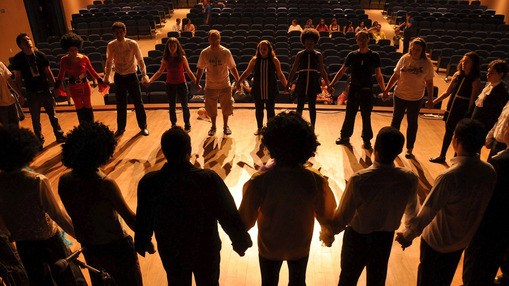
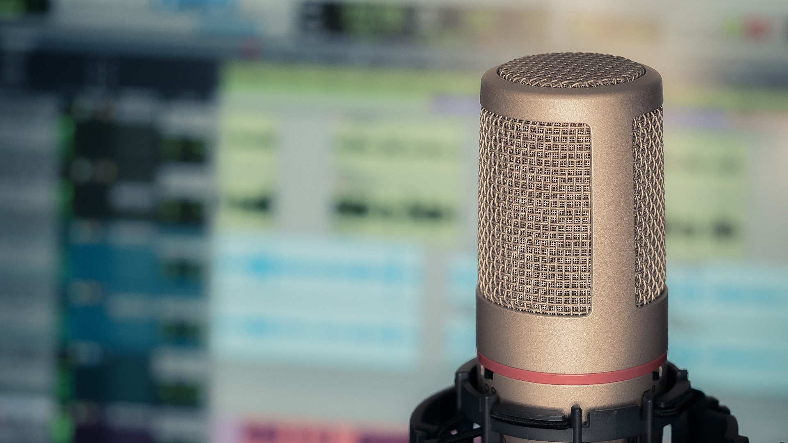

A multimédia olyan technológiai eszközök és tartalmak összessége, amelyek különböző formátumok - például szöveg, kép, hang, videó és animáció - kombinációjával kommunikálnak és információt közvetítenek. Az elmúlt évtizedekben a multimédia rohamos fejlődésen ment keresztül, és ma már szinte minden területen jelen van, legyen szó oktatásról, szórakoztatásról vagy üzleti kommunikációról. A digitális eszközök és az internet elterjedésével a multimédiás tartalmak könnyen hozzáférhetővé és megoszthatóvá váltak.
A multimédia nagy előnye, hogy egyszerre több érzékszervre hat, így hatékonyabbá teszi az információ befogadását és megértését. Például egy oktatási anyag nemcsak szöveges magyarázatot tartalmazhat, hanem képeket, videókat és interaktív elemeket is, amelyek segítik a tanulók figyelmének fenntartását és a komplex fogalmak könnyebb elsajátítását. A multimédia alkalmazása növeli az élményt és a motivációt, így különösen népszerű az e-learning és a digitális marketing területén.
Ugyanakkor a multimédia használata kihívásokat is rejt magában. A különböző tartalmak előállítása idő- és erőforrásigényes lehet, és szükség van hozzá megfelelő technikai ismeretekre is. Emellett fontos szempont a hozzáférhetőség biztosítása, hogy a különböző képességű és hátterű felhasználók egyaránt használhassák a multimédiás anyagokat. Mindezek ellenére a multimédia továbbra is az egyik legdinamikusabban fejlődő és egyre nagyobb hatással bíró kommunikációs eszköz a modern világban.

A filmkészítés foglalkozásai izgalmas lehetőséget kínálnak mindazoknak, akik szeretnék megismerni a filmes világ varázslatos kulisszatitkait és saját alkotásaikat létrehozni. A résztvevők megtanulhatják a filmkészítés alapvető lépéseit, a videók vágásáig és a vágó és szerkesztő szoftverek megtanulásáig. Ezek a foglalkozások gyakorlati és elméleti tudást egyaránt nyújtanak, miközben a tanulók saját rövidfilmjeiket készíthetik el. Fedezd fel, hogyan válhatnak ötleteid látványos filmes történetekké, és csatlakozz hozzánk, hogy megtapasztald a filmkészítés művészetét!
Fedezd fel a színjátszás, önismeret, beszéd, testmozgás és tánc világát! Ezek a foglalkozások nemcsak a művészi készségeidet fejlesztik, hanem mélyebb önismeretre is szert tehetsz. A színjátszás segítségével különböző karakterek bőrébe bújhatsz, miközben a beszédtechnika révén tökéletesíted az artikulációdat és hangképzésedet. A testmozgás oktatásokkal finomítod a mozdulataidat, hogy hitelesen jeleníts meg minden szerepet, a tánc pedig dinamikus és látványos elemekkel gazdagítja az előadásaidat. Csatlakozz hozzánk, és lépj színpadra magabiztosan, önazonosan és professzionálisan!

Ismerd meg a professzionális hangfelvétel, hangszerkesztés és hangutómunka kreatív műhelyét, ahol a résztvevők megismerkednek a hangtechnika, az akusztika és a digitális hangfeldolgozás alapjaival. A foglalkozások során elsajátítják a mikrofonok, keverőpultok, hangrögzítő eszközök és hangszerkesztő szoftverek használatát, valamint a hangkeverés, a zajszűrés és a hangeffektek készítésének technikáit. A stúdió a podcastok, szinkronfelvételek, hangjátékok és zenei produkciók mellett a filmes, animációs és videojáték-fejlesztő műhelyek munkáját is támogatja, lehetőséget teremtve filmzenék, atmoszférák és egyedi hanghatások megalkotására.
A beszéd, szinkron és podcast foglalkozások során a résztvevők megismerkednek a tudatos beszéd, a helyes artikuláció, a hangképzés és az előadói kommunikáció alapjaival. Gyakorlati feladatokon keresztül fejlesztik kifejezőkészségüket, megtanulják a mikrofonhasználat, a narráció és a szinkronszínészet technikáit, valamint betekintést nyernek a hangfelvétel és a hangszerkesztés világába.
